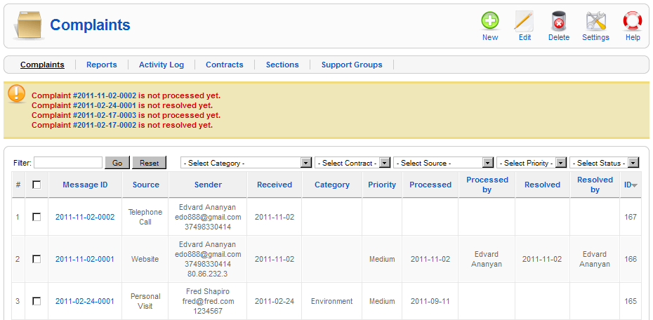
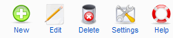

| Complaint Logging System |
Description
This component loggs complaints received by the one of following ways: (1) through a form on the website, (2) by sending an SMS message, (3) via e-mail.
- Web Logging: The user would open the "Feedback" page at the site and enter key information (name, contacts, etc) along with details of the complaint.
- SMS Logging: Upon receipt of an SMS complaint an acknowledgement message would be returned to the complainant indicating that the message was received and will be processed. Upon resolution the complainant would receive a message which they can confirm that the resolution was satisfactory or otherwise. If the latter, additional steps will need to be done.
- E-mail Logging: An e-mail would be sent to an e-mail address. An auto-responder would send out an acknowledgement and the business flow would be the same as for SMS logging.
Upon receipt of a complaint, the message would be automatically forwarded via e-mail to at least three different users. The reporting facility in the system would record the details of the message, sender information, when received, etc. Later, when resolved, the complainant will be notified by SMS if possible. The reporting system will record the elapsed time for dealing with the complaint as well as the outcome. The system allows anonymous complaints to be made if the displaced person wish to do so.
Screenshot

Column Headers
#. An indexing number automatically assigned by Joomla! for ease of reference. Checkbox. Check this box to select one or more items. To select all items, check the box in the column heading. After one or more boxes are checked, click a toolbar button to take an action on the selected item or items. Message ID. Unique complaint identification number. Source. The source of the complaint. Sender. The sender details. Received. The date complaint was received. Area. The area of the complaint. Priority. The priority of the complaint. Processed. The date complaint was processed. Editor. Editor name who processed the complaint. Resolved. The date complaint was resolved. Resolver. Editor name who resolved the complaint. ID. This is another unique identification number for the complaint.
Toolbar
At the top right you will see the toolbar:

New. Opens a new complaint creation form. Edit. Select one item and click on this button to open it in edit mode. You can also open an item for editing by clicking on its Message ID. Delete. Select one item and click on this button to delete it. It will delete the complaint. Rules. Opens component configuration settings. Help. Opens this Help Screen.
Quick Tips
If the complaint is not processed/resolved in N days specified in the Rules, you will see a warning message on the top. If you want to see statistics data about complaints you can navigate to Reports section from the top left under Complaints title. If you don't see a button described here, it means that you don't have permission to do the appropriate action. If you are an admin and want to add/modify roles for the users, you need to do that from Site -> User Manager.
Related Information
- For creating/processing/resolving a complaint you may consider reading: New Complaint
|